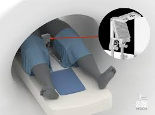

Pranav Bajaj
Robotics & AI Engineer | Visionary for Human-Robot Collaboration
About Me
[Brief intro about your background, current role, and passions]
Thoughts
"I envision a future where humans see robots not as tools, but as beings that coexist and assist in our everyday life."
Career
Machine Learning Engineer – Tesla
Working on geometric vision for self-driving cars. Built scalable models for estimating geometric entities.
View on GitHub Education
Johns Hopkins University
MS in Robotics
Courses: Robot Systems Programming, AI, Control Systems, Deep Learning
Research: MRI-Guided Needle Insertion and Tip Tracking using Extended Kalman Filters
Projects
Needle Tracking AI
Developed zero-shot learning and segmentation models for localizing biopsy needles in ultrasound images.
Blog
Contact
Email: pranav.bajaj@email.com